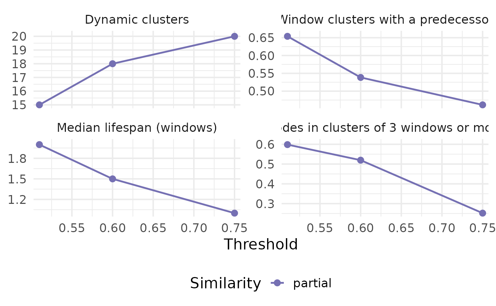
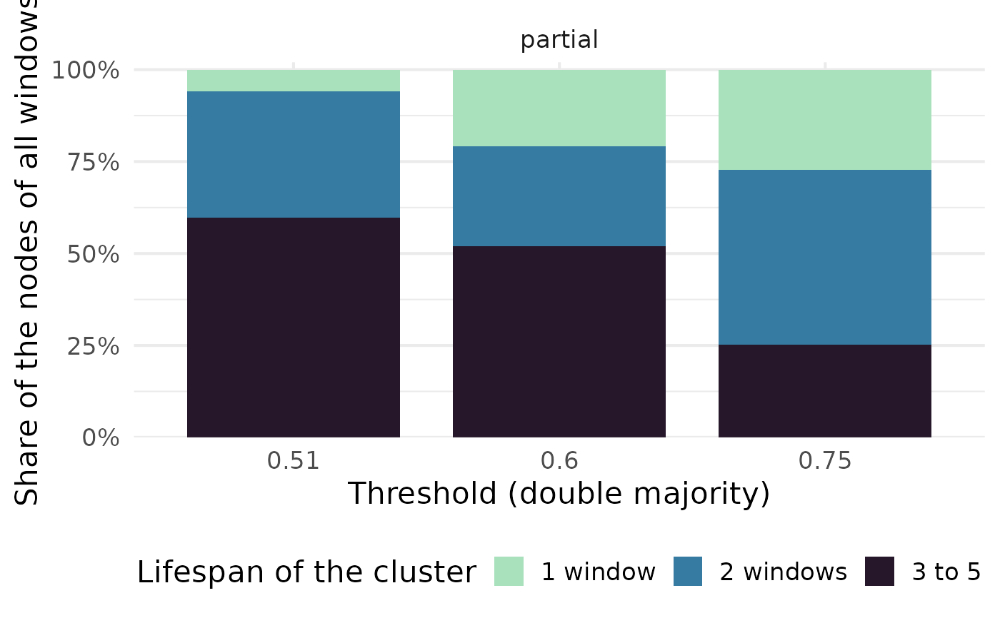

Plot the diagnostics of the matching of clusters across windows
Source:R/merge_diagnostics.R
plot_merge_diagnostics.Rd![[Experimental]](figures/lifecycle-experimental.svg)
Draws the result of merge_diagnostics(). Two views are available:
"summary"(default): one panel per indicator (number of dynamic clusters, share of window clusters that find a predecessor, median lifespan, share of nodes in persistent clusters...), against the threshold, with one line per type of similarity. Look for plateaus: thresholds around which the indicators barely move."lifespans": for each threshold, the share of the nodes (of all windows) that belong to dynamic clusters of a given lifespan (1 window, 2, 3 to 5, 6 to 10, more than 10), one panel per type of similarity. It shows how the weight of short-lived and long-lived clusters changes with the threshold.
Arguments
- diagnostics
The result of
merge_diagnostics().- view
"summary"or"lifespans".- metrics
For the summary, the columns of
diagnosticsto draw.- base_size
Base font size of the plot.
Examples
networks <- build_dynamic_networks(
nodes = subset(Nodes_stagflation, source_type == "Stagflation"),
directed_edges = Ref_stagflation,
source_id = "source_id",
target_id = "target_id",
time_variable = "source_year",
time_window = 10,
window_step = 4,
cooccurrence_method = "coupling_angle",
edges_threshold = 2,
verbose = FALSE
)
#> Warning: The last window is shorter than the others.
#> ℹ The data end in "2013", but the last window ends in "2016".
networks <- add_clusters(
networks,
clustering_method = "leiden",
objective_function = "modularity",
seed = 123,
verbose = FALSE
)
diagnostics <- merge_diagnostics(
networks, "cluster_leiden", "source_id",
thresholds = c(0.51, 0.6, 0.75), similarity_types = "partial", verbose = FALSE
)
#> Warning: 1 pair of consecutive windows share no node: its clusters cannot be matched,
#> whatever the threshold.
plot_merge_diagnostics(diagnostics)

plot_merge_diagnostics(diagnostics, view = "lifespans")
